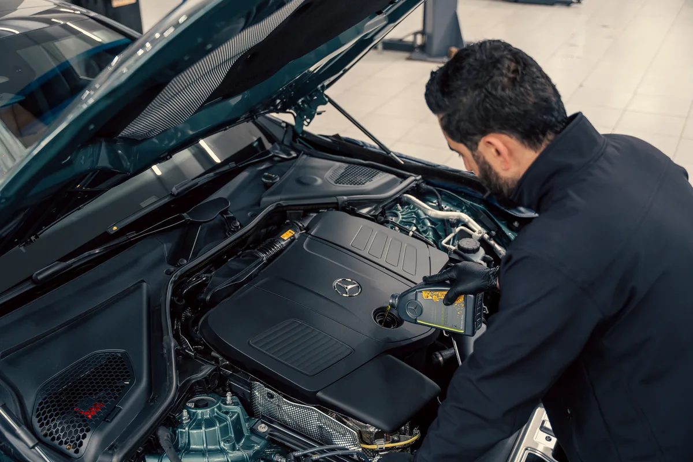
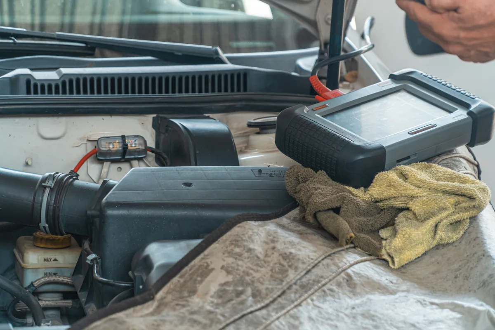
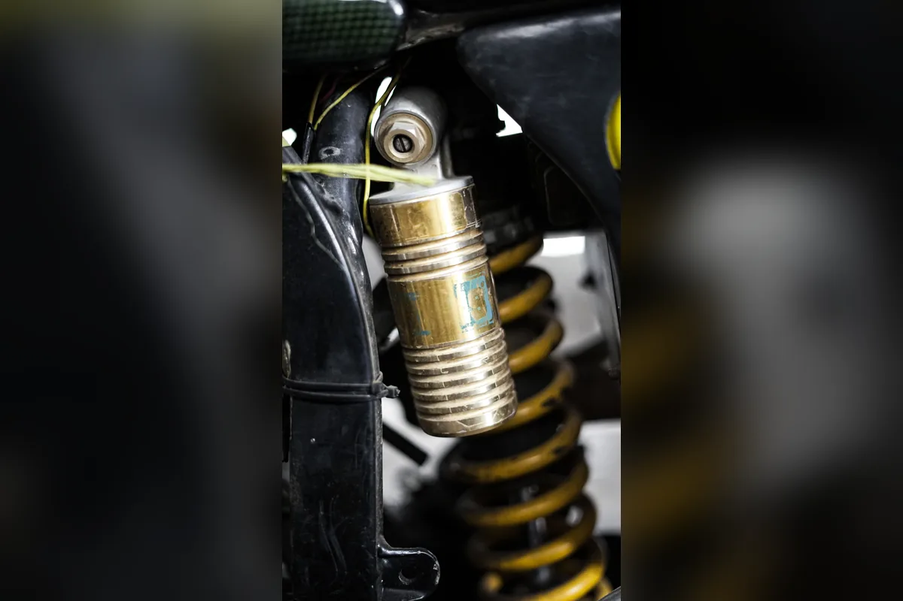
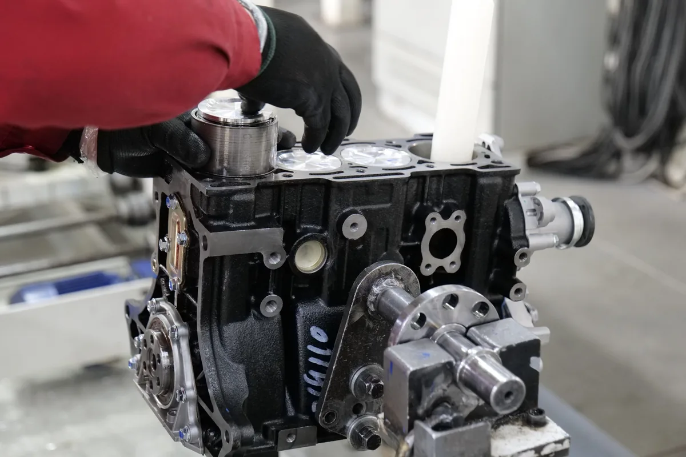
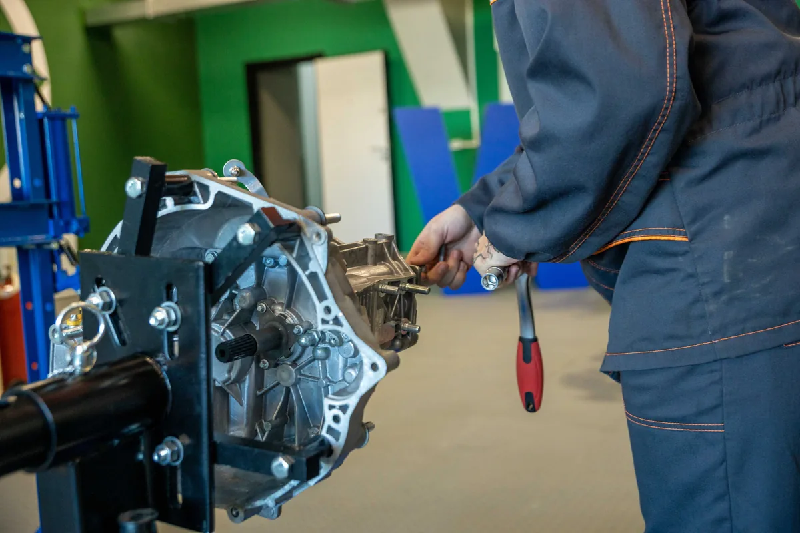
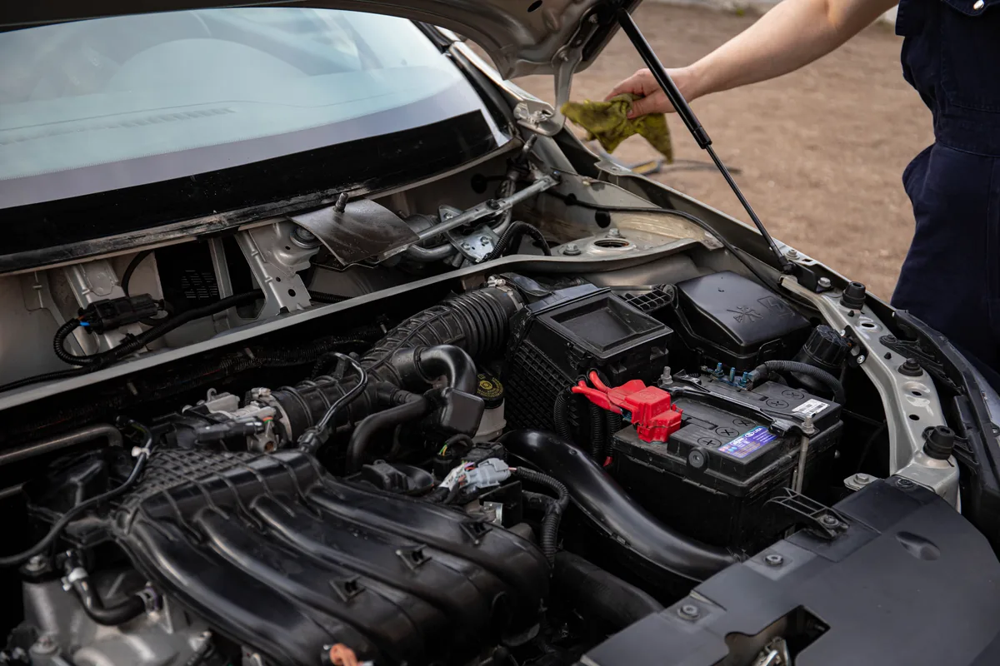
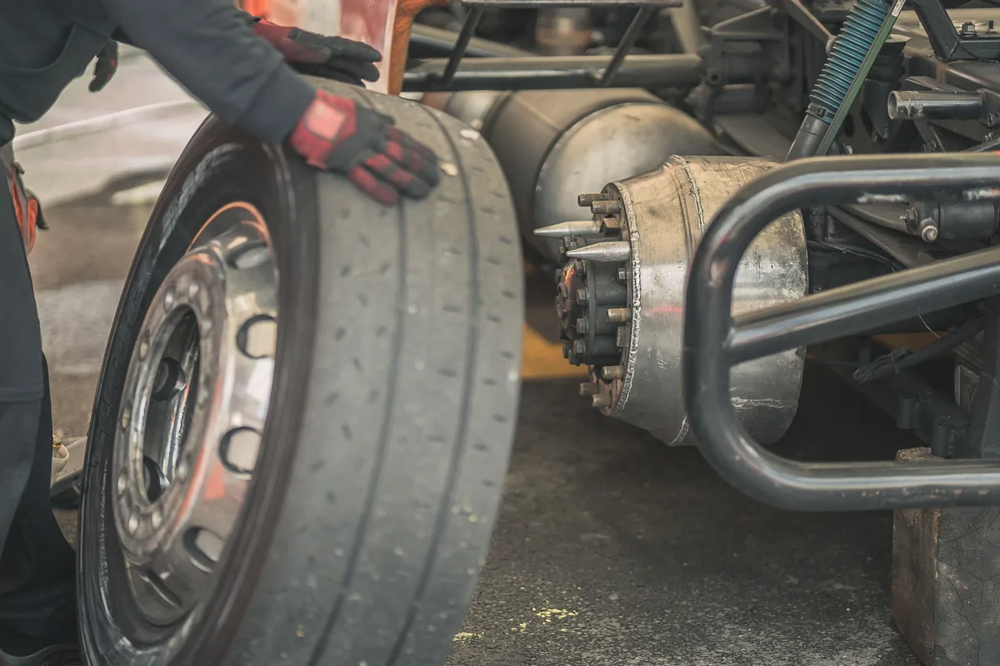

Услуги автосервиса VN-MASTERS
Работаем с автомобилями популярных марок, проводим диагностику и ремонт по согласованной смете.











Как проходит ремонт
Заявка
Вы оставляете обращение на сайте.
Первичная консультация
Уточняем симптомы и задачу.
Диагностика
Проверяем авто и фиксируем причины.
Согласование сметы
Подтверждаем стоимость до ремонта.
Ремонт
Выполняем согласованные работы.
Контроль и выдача
Проверяем результат и выдаём авто.
Нужна запись на ближайшее время?
Оставьте заявку и мастер перезвонит в рабочее время.
FAQ
Можно ли приехать без записи?
Да, но при записи вы получите приоритет по времени.
Сколько длится диагностика?
Обычно 30–60 минут, сложные случаи дольше.
Можно ли привезти свои запчасти?
Можно, после проверки совместимости.
Есть ли гарантия на ремонт?
Да, гарантия фиксируется в заказ-наряде.